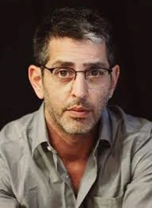

כפר עזה
עידן רועי ז"ל
צלם עיתונות, אמן ומורה לצילום
סיפור חיים
רועי עידן ז״ל, בנם של ליזה וכרמל עידן, נולד בט״ז באלול תש״ם, 28 באוגוסט 1980. הוא היה הילד השני במשפחה, אח לעמית, גלעד ודפנה.
רועי גדל בכפר הרי״ף, השוכן בין קריית מלאכי לגדרה. אימו ליזה סיפרה עליו שהיה ״ילד מהסרטים״ - ילד שקט, נעים וטוב, שלא שמעו ממנו בכי או טענות.
הוא למד בבית הספר היסודי האזורי ״גדרות״ ביישוב עשרת, ובהמשך בתיכון האזורי ״צפית״ בקיבוץ כפר מנחם. כבר כתלמיד במגמת צילום היה ברור שהצילום הוא ייעודו.
לאחר סיום לימודיו התגייס לצה״ל ושירת בנח״ל. למרות הקשיים הפיזיים והמנטליים של השירות הקרבי, חש סיפוק מהיותו משמעותי ותורם.
עם שחרורו המשיך להתקדם במסלול הצילום. הוא למד במכללת ספיר בשדרות, במחלקת הנדסאי צילום ומדיה דיגיטלית, וביסס את דרכו המקצועית כצלם וכיוצר.
בשנת 2006 הגיע לקיבוץ נחל עוז, שם עבד כמדריך נוער והתגורר במקום. בקיבוץ הכיר את סמדר, בת כפר עזה, ומאותו רגע ועד יומו האחרון המשיך להיות מוקסם ממנה ולספר בשבחה. השניים נישאו ובנו את ביתם בכפר עזה.
לרועי ולסמדר נולדו שלושה ילדים: מיכאל, עמליה ואביגיל. החיים בביתם שבכפר עזה, סמוך לגבול, נשאו איתם אהבה גדולה לקהילה ולטבע, לצד האיום המתמיד מרצועת עזה.
רועי עבד כצלם עיתונות בקבוצת ״ידיעות אחרונות״ וב־ynet, ובמשך שנים רבות סיקר את גזרת רצועת עזה. אביו כרמל סיפר כי רועי הפך לצלם מלחמות, אך לצד תיעוד המלחמה והדרום צילם גם תחומי חיים אחרים - ספורט, אנשים, תרבות וטבע.
אילנה קוריאל, כתבת ynet שעבדה איתו, סיפרה כי בכתבות השטח שרועי צילם היו עומק ורגישות, וכי הוא הצליח לגעת בהרבה אנשים.
קשת, רכזת הצלמים ב־ynet, הגדירה את רועי כ״לוחם תקשורת עם מצלמה״, אדם שהעיתונות בערה בו והניעה אותו, מי שהאמין בשליחות של עבודתו.
נרי, כתב ynet, סיפר כי רועי כצלם היה ״צייד מלחמות״, אך כאזרח היה שוחר שלום גדול. לדבריו, כמו בצילומיו, רועי תמיד ידע לזהות את הסבל של האחר ולהאיר את המקום שבו צריך להתמקד.
לצד סיקורו העיתונאי את האירועים הביטחוניים בדרום, אהב רועי לצלם טבע. הוא עקב אחר להקות זרזירים בנגב המערבי, תיעד כלניות, חצבים, נחלים, שדות, שקמים, שקדיות, שיטפונות ואנשים שמחים. הוא אהב לצלם חיים, תנועה, אור, חגיגות ויופי.
רועי היה גם אמן. הוא יצר סרטים דוקומנטריים ועבודות וידיאו ארט שהוצגו במוזיאונים ובגלריות, והציג בקביעות בתערוכת ״עדות מקומית״, התערוכה השנתית לצילום עיתונות ותיעוד.
במקביל לעבודתו כצלם, לימד צילום בבית הספר לאומנות ״קמרה אובסקורה״. ינאי ספרני, מנהל בית הספר, סיפר כי רועי הגיע לפני כל שיעור, ישב עם תלמידים באופן אישי, ליווה אותם מקרוב, וידע להגיע לכל אחד בצניעות ובשקט שאפיינו אותו.
שבעה באוקטובר והימים שאחריו בבוקר שבת, שמחת תורה תשפ״ד, 7 באוקטובר 2023, חדרו מחבלים לקיבוץ כפר עזה במסגרת מתקפת הטרור הרצחנית על יישובי עוטף עזה.
עם תחילת המתקפה יצא רועי מביתו ותיעד את חוליית המחבלים שחדרה לכפר עזה באמצעות מצנחי רחיפה ממונעים. ככל הנראה, זה היה מן התיעודים הראשונים של מתקפת הטרור. לאחר מכן הספיק לצלם גם את מטחי הטילים והיירוטים באזור, ושלח את התיעוד למערכת ynet.
זמן קצר לאחר מכן נורה רועי למוות ליד ביתו, בעת שבתוך בית המשפחה נרצחה רעייתו סמדר. בתם הקטנה אביגיל, שהייתה אז בת שלוש, הצליחה להגיע לבית שכנים ובהמשך נחטפה לרצועת עזה. שני ילדיהם הגדולים, מיכאל ועמליה, הסתתרו במשך שעות וניצלו בזכות תושייתם.
אביגיל שוחררה משבי חמאס ב־26 בנובמבר 2023, במסגרת עסקה לשחרור חטופים.
רועי עידן נרצח בכפר עזה בכ״ב בתשרי תשפ״ד, 7 באוקטובר 2023. בן 43 היה במותו.
רועי וסמדר הובאו למנוחות יחד בבית העלמין בכפר הרי״ף. על מצבותיהם כתבו אוהביהם: ״נרצחו בדם קר. הכלניות, בחייהם ובמותם לא נפרדו.״
זיכרון ומילים מהלב כרמל, אביו של רועי, ספד לו וסיפר על אומץ ליבם של מיכאל ועמליה, ילדיהם של רועי וסמדר, שהצליחו לשרוד שעות ארוכות עד החילוץ.
אימו של רועי ספדה לו ולסמדר במילים על הבית שמעבר לגבעה, על הברושים הנשקפים מהמרפסת, ועל כך שתמשיך לדבר איתם בליבה כאילו הם עדיין עימה.
מתן צורי, כתב ynet, כתב על רועי כי אהב לצלם כלניות, חצבים, נחלים, שיטפונות, זרזירים, ילדים שמחים, חגיגות ושדות - אך לא אהב לצלם מלחמות. הוא נפרד ממנו במילים: ״שלום לך צלם מוכשר ואהוב על כולנו, אבא גיבור ונהדר.״
במינהלת ליגת העל בכדורסל כתבו כי רועי, שעבד בעבר עם המינהלת, צילם רגעי כדורסל קסומים וייזכר כאדם מקסים, נעים הליכות ומקצוען ללא פשרות.
בחודש ינואר 2024 זכה רועי בפרס המכון הישראלי לעיתונות על הצטיינות בעבודה עיתונאית אמיצה וחסרת פשרות.
ארגון העיתונאים והעיתונאיות השיק פרס שנתי לצילום עיתונות לזכרו של רועי, פרס שממשיך את דרכו המקצועית ואת מחויבותו לתיעוד, לאמת ולעין האנושית שמאחורי המצלמה.
רועי נזכר כצלם מוכשר ורגיש, אב אוהב, בן זוג מסור, בן, אח, חבר, מורה ואיש של אמת. אדם שידע לראות יופי גם במקומות מורכבים, להעניק עומק לרגעים חולפים, ולתעד את החיים בעיניים מלאות רגישות, חמלה ואור.